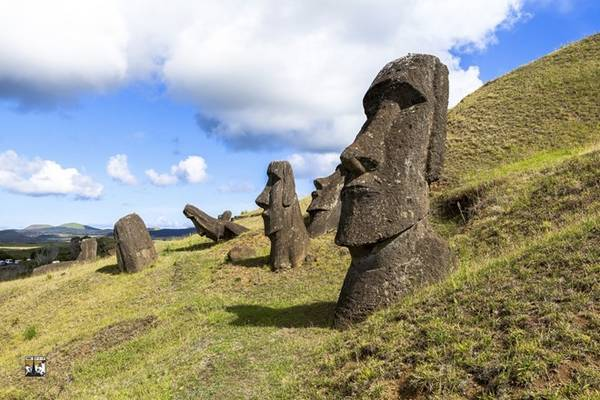
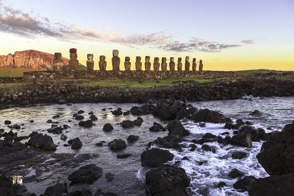

NGUỒN GỐC CÁI TÊN
Tên Phục Sinh do nhà hàng hải Jacob Roggeveen của Hà Lan, người châu Âu đầu tiên tình cờ đi ngang qua hòn đảo biệt lập này, đặt ra để kỷ niệm ngày ông đến đảo đúng dịp lễ Phục sinh vào năm 1722. Đối với người dân đảo vẫn thích gọi quê hương của mình bằng cái tên Rapa Nui, nghĩa là hòn đảo xa vắng .
Vị trí đảo Phục Sinh
NHỮNG BỨC TƯỢNG ĐÁ BÍ ẨN
Hòn đảo này nổi tiếng với những bức tượng hình người bằng đá – được gọi là Moai, tuổi thọ khoảng 6.000 năm. Các pho tượng Moai nằm rải rác ở khắp nơi trên đảo, chứa đựng nhiều câu chuyện kỳ bí, thách thức sự khám phá của khách du lịch.
Khoảng 95% trong số 887 pho tượng Moai trên đảo Phục Sinh được tạc từ mỏ đá núi lửa Rano Raraku, nơi 394 Moai vẫn đứng sừng sững ngày nay. Một số khác được dựng sát bờ biển, mặt hướng vào hòn đảo mà theo người dân là để bảo vệ họ.
MỘT VÙNG ĐẤT CÔ LẬP CHỨA ĐỰNG NHỮNG ĐIỀU BÍ ẨN
Xét về mặt địa lý, Rapa Nui nằm cô lập nhất thế giới, cách nơi gần nhất là đảo Pitcairn hơn 2.000 km, cách bờ lục địa Chile gần 4.000 km. Đã vậy, cả chính phủ Chile lẫn dân đảo đều không muốn Rapa Nui trở thành điểm đến du lịch đông đúc. Họ muốn bảo tồn cảnh quan thiên nhiên và nét văn hóa bản địa của tổ tiên từ ngàn xưa.

Người Rapa Nui sinh sống chủ yếu bằng đánh bắt cá và chăn nuôi gia súc. Họ luôn tìm mọi cách để giữ gìn các phong tục truyền thống, và từ chối sự xâm nhập của nền văn minh bên ngoài. Dân số trên đảo xấp xỉ 5.000 người, trong đó số người bản địa chính gốc chỉ chiếm khoảng hơn một nửa. Thị trấn duy nhất trên đảo là Hanga Roa. Ở đây có được dăm ba hàng quán, khách sạn, các cửa hàng tạp hóa và vài con đường nhựa dọc ngang qua mấy cơ quan hành chính, trường học, ngân hàng, bưu điện và bảo tàng .
Đảo Phục Sinh không nổi tiếng khách với các resort sang trọng, những bãi tắm đẹp, những món ăn ngon, mà làm say đắm lòng người bởi phong cảnh thanh bình và những điều bí ẩn cần được khám phá.
@ Nguồn: ivivu.com